산업안전산업기사 (2007-08-05 기출문제)
1과목: 산업안전관리론
1. 사업장에서 근로자 2000명이 1일 9시간씩 년간 300일 작업하는데 1명의 사망자와 의사진단에 의한 60일의 휴업일수를 가져왔다. 이 사업장의 강도율은 약 얼마인가?
- 1.21
- 1.40
- 1.57
- 1.84
(정답률: 45%)

2. 사고 예방대책의 기본 원리 5단계 중 “시정책의 적용”에 있어서 3E에 해당되지 않는 것은?
- Enforcement
- Engineering
- Education
- Energy
(정답률: 72%)
3. 산업안전보건법상 안전ㆍ보건표지의 종류 중 지시표지에 포함되지 않는 것은?
- 안전모 착용
- 안전화 착용
- 방호복 착용
- 방독마스크 착용
(정답률: 65%)
4. 다음 중 부주의 현상으로 볼 수 없는 것은?
- 의식의 우회
- 의식수준의 저하
- 의식의 포함
- 의식의 과잉
(정답률: 74%)
5. 맥그리거(McGregor)가 주장한 X - Y 이론 중 Y 이론으로 가장 적당한 것은?
- 인간은 서로 신뢰한다.
- 인간은 물질적 욕구가 지배적이다.
- 인간은 명령통제에 의한 관리가 필요하다.
- 인간은 타인의 지배 받기를 좋아한다.
(정답률: 67%)
6. 다음 중 평균 근로자 수가 1000명 이상의 대규모 사업장에 가장 적합한 안전조직은?
- 라인(line)형 안전조직
- 스태프(staff)형 안전조직
- 라인-스태프(line-staff)형 혼합조직
- 생산부서장의 안전책임자 겸직조직
(정답률: 87%)
7. 다음 중 Super.D.E의 역할이론에 포함되지 않는 것은?
- 역할 갈등
- 역할 기대
- 역할 조성
- 역할 유지
(정답률: 43%)
8. 다음 중 인간의 적응기체(適應機剃)에 포함되지 않는 것은?
- 갈등(conflict)
- 억압(repression)
- 공격(aggression)
- 합리화(rationalization)
(정답률: 50%)
9. 다음 중 기능교육의 3원칙에 해당하지 않는 것은?
- 준비
- 안전의식 고취
- 위험작업의 규제
- 안적작업 표준화
(정답률: 44%)
10. 전문가 4~5명이 피교육자 앞에서 자유로이 토의를 하고, 그 후에 피교육자 전원이 사회자의 사회에 따라 토의하는 방법을 무엇이라 하는가?
- 패널 디스커션(Panel discussion)
- 심포지엄(Symposium)
- 버즈세션(Buzz session)
- 롤 플레잉(Role playing)
(정답률: 62%)
11. 교육의 3요소 중 교육의 주체로 옳은 것은?
- 강사
- 교재
- 수강자
- 교육방법
(정답률: 76%)
12. 다음 중 재해 발생시 가장 먼저 해야 할 일은?
- 재해자의 구조
- 상급 부서의 보고
- 현장 보존
- 2차 재해의 방지
(정답률: 81%)
13. 다음 중 안전교육자의 자세로서 바람직하지 못한 것은?
- 상대방의 입장이 되어서 가르칠 것
- 쉬운 것에서 어려운 것으로 가르칠 것
- 가능한 한 전문용어를 사용하여 가르칠 것
- 중요한 것은 반복해서 가르칠 것
(정답률: 83%)
14. 다음의 내용은 주의의 특징 중 어느 것을 의미하는가?
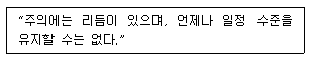
- 선택성
- 방향성
- 변동성
- 일점 집중성
(정답률: 76%)
15. 인간의 의식 수준(phase) 중 중요하거나 위험한 작업을 안전하게 수행하기 위하여 근로자는 몇 단계의 수준에서 작업하는 것이 바람직한가?
- 0 단계
- 1 단계
- 3 단계
- 4 단계
(정답률: 53%)
16. 다음 중 안전모의 성능시험 항목에 해당되지 않는 것은?
- 내관통성
- 내수성
- 내식성
- 내전압성
(정답률: 55%)
17. 피로를 측정하는 방법은 크게 3가지로 구분할 수 있는데 동작분석, 연속반응시간 등을 통하여 피로를 측정하는 방법은 다음 중 어느 것에 해당되는가?
- 생리학적 측정
- 생화학적 측정
- 심리학적 측정
- 생역학적 측정
(정답률: 47%)
18. 산업안전보건법상 사업주가 근로자에 대하여 실시하여야 하는 교육 중 특별안전보건교육의 대상작업이 아닌 것은?
- 가연성, 폭발성 가스의 발생장치 취급작업
- 방폭용 전기기계ㆍ기구를 사용하는 작업
- 주물 및 단조작업
- 화학설비의 탱크내 작업
(정답률: 31%)
19. 무재해 운동의 이념 가운데 직장의 위험 요인을 행동하기 전에 예지하여 발견, 파악, 해결하는 것은 다음 중 무엇을 의미하는 것인가?
- 선취의 원칙
- 무의 원칙
- 인간 존중의 원칙
- 참가의 원칙
(정답률: 68%)
20. 한 사람의 평생 근로년수를 40년으로 하고, 1일 8시간씩 1개월에 25일의 정상근로와 연간 100시간의 시간외근무를 하였다고 가정한다면, 이 근로자가 도수율이 15.13인 사업장에서 근무하는 경우에 평생근무기간 중 약 몇 건의 재해를 당할 수 있겠는가?
- 1.51
- 2.51
- 5.02
- 15.13
(정답률: 38%)
2과목: 인간공학 및 시스템안전공학
21. 연속되는 소음에 장시간 노출되는 경우 인간의 청력손실이 가장 심한 주파수 대역은?
- 2000Hz
- 4000Hz
- 6000Hz
- 8000Hz
(정답률: 68%)
22. 광원의 밝기가 100cd 이고, 10m 떨어진 곡면을 비출 때의 조도는 몇 Lux 인가?
- 1
- 10
- 100
- 1000
(정답률: 55%)
23. 다음 중 경계 및 경보신호를 설계할 때 적합하지 않은 것은?
- 장애물이 있는 경우에는 500Hz 이하의 진동수를 갖는 신호를 사용
- 주의를 끌기 위해서는 변조된 신호를 사용
- 배경소음의 진동수와 같은 신호를 사용
- 경보효과를 높이기 위해서 개시시간이 짧은 고감도 신호를 사용
(정답률: 62%)
24. Human Error 의 배경요인 중 4M이 아닌 것은?
- 인간(man)
- 기계(machine)
- 재료(material)
- 관리(management)
(정답률: 70%)
25. 다음 중 동작경제의 원칙에 해당하지 않는 것은?
- 가능하다면 낙하식 운반방법을 사용한다.
- 양손을 동시에 반대의 방향으로 운동한다.
- 자연스러운 리듬이 생기지 않도록 동작을 배치한다.
- 양손으로 동시에 작업을 시작하고, 동시에 끝낸다.
(정답률: 64%)
26. 다음 중 통제표시비(C/D비, Control-Display ratio)를 설계할 때의 고려할 사항으로 가장 거리가 먼 것은?
- 계기의 크기
- 운동성
- 공차
- 조작시간
(정답률: 60%)
27. 다음의 열균형방정식의 각 기호와 의미가 바르게 연결된 것은?
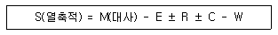
- E : 증발 R : 복사 C : 대류
- E : 대류 R : 증발 C : 복사
- E : 복사 R : 대류 C : 증발
- E : 복사 R : 일 C : 대류
(정답률: 47%)
28. 각각 10000 시간의 수명을 가진 A, B 두 요소가 병렬계를 이루고 있을 때 이 시스템의 수명은 얼마인가?
- 5000시간
- 10000시간
- 15000시간
- 20000시간
(정답률: 41%)
29. 다음 시스템의 신뢰도는 얼마인가?
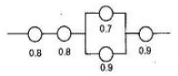
- 0.3628
- 0.4608
- 0.5587
- 0.6667
(정답률: 61%)
30. 다음 중 시스템의 수명곡선(욕조곡선)에서 우발고장 기간에 발생하는 고장의 원인으로 볼 수 없는 것은?
- 안전계수가 낮기 때문에
- 사용자의 과오 때문에
- 최선의 검사방법으로도 탐지되지 않는 결함 때문에
- 부적절한 설치나 시동 때문에
(정답률: 45%)
31. 어떤 공장에서 10000시간 가동하는 동안 부품 15000개 중 15개의 불량품이 발생하였다면 평균고장간격(MTBF)은?
- 1 ×106시간
- 2 ×106시간
- 1 ×107시간
- 2 ×107시간
(정답률: 52%)
32. 정보를 전송하기 위한 표시장치 중 시각장치보다 청각 장치를 사용해야 더 좋은 경우는?
- 메세지가 나중에 재참조 되는 경우
- 메세지가 공간적인 위치를 다루는 경우
- 수신자의 청각계통이 과부하상태인 경우
- 직무상 수신자가 자주 움직이는 경우
(정답률: 73%)
33. 다음의 FTA에 사용되는 기호 중 “생략사상”을 나타내는 기호는?
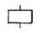
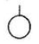
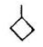
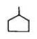
(정답률: 65%)
34. 다음 중 인간-기계 통합 체계의 유형으로 볼 수 없는 것은?
- 자동 체계
- 제어 체계
- 기계화 체계
- 수동 체계
(정답률: 39%)
35. VDT(Visual Display Terminal)를 취급하는 작업장에서 화면의 바탕색이 검정색 계통일 경우 추천되는 조명수준으로 가장 적절한 것은?
- 200 ~ 300 Lux
- 300 ~ 500 Lux
- 750 ~ 800 Lux
- 800 ~ 900 Lux
(정답률: 56%)
36. "음의 높이, 무게 등 물리적 자극을 상대적으로 판단하는데 있어 특정감각기관의 변화감지역은 표준자극에 비례한다.“는 법칙을 발견한 사람은?
- 웨버(Weber)
- 호프만(Hofmann)
- 체핀(Chaffin)
- 핏츠(Fitts)
(정답률: 69%)
37. 다음 중 의자 설계시의 원칙에 고려되는 일반적인 시항으로 가장 거리가 먼 것은?
- 체중의 분포
- 의자 좌판의 높이
- 의자 등판의 높이
- 의자 좌판의 깊이와 폭
(정답률: 50%)
38. 다음 중 시스템 안전을 위한 업무의 수행 요건이 아닌 것은?
- 안전활동의 계획 및 관리
- 시스템 안전에 필요한 사람의 동일성 식별
- 시스템 안전에 대한 프로그램 해석 및 평가
- 다른 시스템 프로그램과 분리 및 배제
(정답률: 71%)
39. 인간-기계 체계에서 인간과 기계가 만나는 면(面)을 무엇이라고 하는가?
- 계면
- 포락면
- 의사결정면
- 인체설계면
(정답률: 59%)
40. 다음 중 정량적 표시장치에 대한 설명으로 틀린 것은?
- 정목동침형은 대략적인 편차나 변화를 빨리 파악할 수 있어 정성적으로도 사용할 수 있다.
- 정침동목형은 조작상의 실수 없이 쉽게 조작할 수 있어 생산설비에 많이 사용되고 있다.
- 계수형은 판독오차가 적다.
- 필요에 따라 계수형과 아날로그형을 혼합해서 사용할 수 있다.
(정답률: 44%)
3과목: 기계위험방지기술
41. 연삭숫돌의 지름이 100mm 이고, 회전수가 1000rpm이라면 숫돌의 원주속도(mm/min)는?
- 314
- 628
- 314000
- 628000
(정답률: 46%)
42. 목재 가공용 기계에서 모떼기 기계의 방호장치는?
- 빈발예방장치
- 날 접촉예방장치
- 급정지장치
- 이탈방지장치
(정답률: 64%)
43. 프레스 작업이 끝난 후 페달에 U자형 상자를 씌우는 가장 큰 이유는?
- 페달 보호
- 기계와 인명의 안전
- 먼지 침투방지
- 고장 방지
(정답률: 65%)
44. 작업자의 신체움직임을 감지하여 프레스의 작동을 급정지 시키는 광전자식 안전장치를 부착한 프레스가 있다. 급정지에 소요되는 시간이 0.1초라면 안전거리는 얼마로 하여야 하는가?
- 0.16 m
- 0.26 m
- 0.36 m
- 0.56 m
(정답률: 58%)
45. 보일러수에 유지류, 고형물 등의 부유물로 인한 거품이 발생하여 수위를 판단하지 못하는 현상은?
- 프라이밍(priming)
- 케리오버(carry over)
- 포밍(formming)
- 워터해머(water hammer)
(정답률: 82%)
46. 취급운반의 5원칙 중 틀린 것은?
- 연속운반으로 할 것
- 직선운반으로 할 것
- 운반작업을 집중화 할 것
- 생산을 최소로 하는 운반을 생각할 것
(정답률: 80%)
47. 컨베이어에 부착시켜야 할 방호장치로서 적합하지 않는 것은?
- 비상 정지 장치
- 역전 방지 장치와 브레이크
- 과부하 방지장치
- 덮개 또는 낙하방지용 올
(정답률: 58%)
48. 보일러와 폭발사고예방을 위한 방호장치가 아닌 것은?
- 화염검출기
- 권과방지장치
- 압력제한스위치
- 압력방출장치
(정답률: 72%)
49. 나사의 풀림방지를 위하여 사용하는 것으로 가장 관련이 적은 것은?
- 코터(cotter)
- 와셔(washer)
- 분할 핀(split pin)
- 셋트 나사(set screw)
(정답률: 60%)
50. 탄소강의 인장시험으로 알 수 없는 기계적 성질은?
- 탄성한도
- 항복점
- 피로
- 연신율
(정답률: 43%)
51. 한계하중 이하의 하중이라도 일정 하중을 지속적으로 가하면 시간의 경과에 따라 변형이 증가하고 결국은 파괴에 이르게 되는 현상은?
- 크리이프(creep)
- 피로(fatigue)
- 웅력 집중(stress concentration)
- 가공 경화(stress hardening)
(정답률: 53%)
52. 기계를 구성하는 요소에서 피로현상은 안전과 밀접한 관련이 있다. 피로 파괴현상과 가장 관련이 적은 것은?
- 소음(noise)
- 자국(notch)
- 치수 효과(size effect)
- 부식(corrosion)
(정답률: 68%)
53. 밀링 작업시 안전상 옳지 않은 것은?
- 보안경을 착용한다.
- 칩 제거는 회전 중 청소용 솔로 한다.
- 커터 설치시에는 반드시 기계를 정지시킨다.
- 밀감은 테이블 또는 바이스에 안전하게 고정한다.
(정답률: 84%)
54. 벨트 컨베이어의 특징에 해당되지 않는 것은?
- 무인회 작업이 가능하다.
- 연속적으로 물건을 운반할 수 있다.
- 운반과 동시에 하역작업이 가능하다.
- 경사각이 큰 경우에도 쉽게 물건을 운반할 수 있다.
(정답률: 68%)
55. 기계설비의 안전화 추진 가운데 인간공학 활용 측면으로 검토되어야 할 사항은?
- 보수성
- 작업성
- 낮은 비용
- 인간과 기계와의 융합
(정답률: 57%)
56. 기계설비기구의 위험점에서 고정부분과 회전부분이 만드는 위험점이 아니고, 회전하는 운동부 자체의 위험이나 운동하는 기계부분 자체의 위험에서 초래되는 위험점은? (예를 들면 밀링커터, 둥근 톱의 톱날 등)
- 물림점
- 절단점
- 끼임점
- 협착점
(정답률: 62%)
57. 연삭기 또는 평삭기 테이블 등의 행정 끝에 설치하여야 할 방호장치는?
- 반발 예방장치
- 덮개 또는 물
- 과부하 방지장치
- 브레이크장치
(정답률: 69%)
58. 로울러 작업에서 울(guard)의 적절한 위치 가지의 거리가 40mm 일 때 울의 개구부 설치 간격은 얼마 정도로 하여야 하는가? (단, 국제노동기구 규정을 따른다.)
- 12 mm
- 15 mm
- 18 mm
- 20 mm
(정답률: 62%)
59. 보일러가 최고 사용압력 이하에서 파열되는 원인으로서 가장 적합한 것은?
- 수관의 청소불량
- 방호장치의 작동불량
- 방호장치 미부착
- 구조상의 결점
(정답률: 39%)
60. 크레인에 부착하는 방호장치가 아닌 것은?
- 과부하 방지장치
- 권과 방지장치
- 비상 정지장치
- 방책
(정답률: 70%)
4과목: 전기 및 화학설비위험방지기술
61. 피뢰침의 여유도가 25% 이고, 변압기의 충격절연강도가 1000 kV 라고 할 때 피뢰침의 제한 전압은 몇 kV 인가?
- 800
- 900
- 1000
- 1100
(정답률: 46%)
62. 내압방폭구조를 갖는 설비에서 나사꽂이부의 물림나사산수는 연속된 완전나사부로 최소한 얼마 이상 유효하게 맞물려야 하는가?
- 3산 이상
- 4산 이상
- 5산 이상
- 7산 이상
(정답률: 43%)
63. 다음 중 전기화재의 원인이 아닌 것은?
- 누전
- 단락
- 과전류
- 접지
(정답률: 69%)
64. 다음 가스 중 독성이 강한 순서로 나열된 것은?
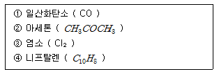
- ① > ③ > ② > ④
- ③ > ④ > ① > ②
- ① > ③ > ④ > ②
- ③ > ④ > ② > ①
(정답률: 38%)
65. 용기 내부에서 폭발성 가스 또는 증기가 촉발하였을 때 용기가 그 압력에 견디며 또한 접합면, 개구부 등을 통해서 외부의 폭발설 가스ㆍ증기에 인화되지 않도록 한 방폭구조는?
- 내압방폭구조
- 압력방폭구조
- 안전증방폭구조
- 본질안전방폭구조
(정답률: 56%)
66. 가연성가스(C1, C2, C3)의 조성과 연소하한값(LFL)이 다음과 같을 때 연소혼합가스의 연소하한값은 약 몇 vol% 인가?
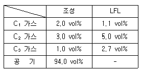
- 1.16
- 2.16
- 3.16
- 4.16
(정답률: 61%)
67. 컴퓨터 등 값이 비싼 전기기계, 기구 등의 소화에 적합하고 가연물과 산소의 화학적 반응을 차단하는 힘이 매우 강한 소화약제는?
- 하론가스
- 강화액
- 건조사
- 탄산수소나트륨
(정답률: 48%)
68. 금속의 용접ㆍ용단 또는 가열에 사용되는 가스 등의 용기에 보관온도 기준으로 적합한 것은?
- 40℃ 이하
- 50℃ 이하
- 60℃ 이하
- 70℃ 이하
(정답률: 69%)
69. 다음 가스 중 공기 중에서 폭발범위가 넓은 순서로 옳은 것은?
- 아세틸렌 > 프로판 > 수소 > 일산화탄소
- 수소 > 아세틸렌 > 프로판 > 일산화탄소
- 아세틸렌 > 수소 > 일산화탄소 > 프로판
- 수소 > 프로판 > 일산화탄소 > 아세틸렌
(정답률: 53%)
70. 다음 중 위험성 물질의 분류상 금수성(禁水性) 물질이 아닌 것은?
- 과염소산산염
- 금속나트륨
- 탄화칼슘
- 탄화알루미늄
(정답률: 53%)
71. 다음 중 산업안전기준에 관한 규칙에서 말하는 “특수화학설비”로 옳지 않은 것은?
- 가열로 또는 가열기
- 발열반응이 일어나는 반응장치
- 온도가 섭씨 100도 이상으로 운전되는 설비
- 게이지압력이 10kg/cm2 이상인 상태에서 운전되는 설비
(정답률: 37%)
72. 다음 중 인체의 감전시 위험도에 영향을 주는 인자로 볼 수 없는 것은?
- 전원의 종류
- 접속기기의 종류
- 통전 시간
- 통전 경로
(정답률: 51%)
73. 다음 중 폭발범위내의 농도에서 연소속도가 가장 빠른 것은?
- 발화
- 착화
- 폭발
- 폭굉
(정답률: 70%)
74. 인체가 충전부에 접촉하여 감전되었을 때 자력으로 이탈 할 수 없는 상태의 전류를 무엇이라 하는가?
- 이탈전류
- 가수전류
- 불수전류
- 심실세동전류
(정답률: 45%)
75. 인화성 액체에 의한 정전기 재해를 방지하기 위해서는 관내의 유속을 몇 m/s 이하로 유지해야 하는가?
- 1
- 2
- 3
- 4
(정답률: 68%)
76. 산업안전보건법에서 정한 “건조설비 및 그 부속설비”의 자체검사 주기로 옳은 것은?
- 3개월에 1회 이상
- 6개월에 1회 이상
- 1년에 1회 이상
- 2년에 1회 이상
(정답률: 33%)
77. 다음 중 폭굉유도거리에 대한 설명으로 틀린 것은?
- 정상연소속도가 큰 혼합가스일수록 짧다.
- 관속에 방해물이 없거나 관의 지름이 클수록 짧다.
- 압력이 높을수록 짧다.
- 점화원의 에너지가 강할수록 짧다.
(정답률: 55%)
78. 다음 중 정전기 대전현상의 설명으로 틀린 것은?
- 마찰대전 : 두 물체가 서로 접촉시 위치의 이동으로 전하의 분리 및 재배열이 일어나는 현상
- 박리대전 : 상호 밀착되어 있는 물질이 떨어질 때 전하분리에 의해 발생하는 현상
- 유동대전 : 액체류를 파이프 등으로 수송할 때 액체와 파이프등의 고체류와 접촉하면서 서로 대전되는 현상
- 분출대전 : 도체가 전기장에 노출되면 도체에는 전하의 분극이 일어나면서 가까운 쪽에는 반대극성이, 먼 쪽은 같은 극성의 전하가 대전되는 현상
(정답률: 68%)
79. 다음 중 접지공사의 종유에 해당되지 않는 것은?(관련 규정 개정전 문제로 여기서는 기존 정답인 1번을 누르면 정답 처리됩니다. 자세한 내용은 해설을 참고하세요.)
- 특별 제1종 접지공사
- 제1종 접지공사
- 제2종 접지공사
- 제3종 접지공사
(정답률: 60%)
80. 다음 중 “하론 1301”의 화학식으로 옳은 것은?
- CClF3
- C2Br2F4
- CBrF3
- CClBr3
(정답률: 48%)
5과목: 건설안전기술
81. 유해ㆍ위험 방지계획서의 첨부서류에 해당하지 않는 것은?
- 공사용 기계, 설비, 건설물 등의 견적서
- 전체공정표
- 건설물ㆍ공사용 기계설비 등의 배치를 나타내는 도면 및 서류
- 산업안전보건관리비 사용계획
(정답률: 41%)
82. 절토공사 중 발생하는 비탈면 붕괴의 원인과 거리가 먼 것은?
- 함수비 불변으로 흙의 단위중량 균일
- 건조로 인하여 점성토의 접착력 상실
- 점성토의 수축이나 팽창으로 균열 발생
- 공사진행으로 비탈면의 높이와 기울기 증가
(정답률: 64%)
83. 지게차를 사용하여 작업하는 때 작업시작 전 점검사항과 가장 거리가 먼 것은?
- 바퀴의 이상 유무
- 제동장치 및 조종장치 기능의 이상 유무
- 하역장치 및 조종장치 기능의 이상 유무
- 과부하방지장치의 작동 유무
(정답률: 65%)
84. 이동식 크레인 또는 크레인의 부적격한 와이어로프의 사용금지 기준으로 틀린 것은?
- 이음매가 있는 것
- 와이어로프의 한 꼬임에서 끊어진 소선의 수가 7% 이상인 것
- 지름의 감소가 공칭지름의 7%를 초과하는 것
- 심하게 변형 또는 부식된 것
(정답률: 57%)
85. 건설업 산업안전보건관리비로 사용할 수 없는 항목은?
- 건설용 리프트의 운전자 인건비
- 차량의 원활한 흐름 또는 교통통제를 위한 교통정리ㆍ신호수의 인건비
- 안전 보조원의 인건비
- 방진설비, 방용설비를 위한 시설비
(정답률: 60%)
86. 안전난간은 임의의 점에서 임의의 방향으로 움직이는 최소 얼마의 하중을 견딜 수 있는 구조이어야 하는가?
- 100kg
- 150kg
- 200kg
- 250kg
(정답률: 62%)
87. 강관비계의 기둥 간의 적재하중을 제한하는 기준은 최대 얼마 이하인가?
- 200kg
- 400kg
- 600kg
- 800kg
(정답률: 68%)
88. 지반 등을 굴착할 때 풍화암의 기울기 기준으로 옳은 것은?(2021년 11월 19일 개정된 규정 적용됨)
- 1 : 0.5
- 1 : 0.8
- 1 : 1.0
- 1 : 1.5
(정답률: 68%)
89. 이동식 사다리를 조립할 때 폭은 최소 몇 cm 이상이어야 하는가?
- 20cm
- 25cm
- 30cm
- 50cm
(정답률: 63%)
90. 추락방지용 방망의 지지점은 최소 몇 kgf 이상의 충격력에 견딜 수 있어야 하는가?
- 300kgf
- 500kgf
- 600kgf
- 1000kgf
(정답률: 49%)
91. 점성토 지반의 개량공법으로 가장 적합하지 않은 것은?
- 여성토(Pre-loading)공법
- 바이브로 플로테이션 공법
- 치환공법
- 페이퍼 드레인공법
(정답률: 36%)
92. 항타기 또는 항발기의 와이어로프의 정단하중 값과 와이어로프에 걸리는 하중의 최대값이 보기와 같을 때 사용 가능한 경우는?
- 와이어로프의 절단하중 값 : 10 ton 와이어로프에 걸리는 하중의 최대값 : 2 ton
- 와이어로프의 절단하중 값 : 15 ton 와이어로프에 걸리는 하중의 최대값 : 4 ton
- 와이어로프의 절단하중 값 : 20 ton 와이어로프에 걸리는 하중의 최대값 : 6 ton
- 와이어로프의 절단하중 값 : 25 ton 와이어로프에 걸리는 하중의 최대값 : 8 ton
(정답률: 57%)
93. 해체건물의 조사결과에 따른 해체계획에 포함되어야 할 사항이 아닌 것은?
- 해체건물의 구조
- 해체의 방법
- 사업장내 연락방법
- 해체물의 처분계획
(정답률: 24%)
94. 크레인에 대한 과부하의 제한 사항에 맞도록 ( ）안에 가장 적합한 용어는?
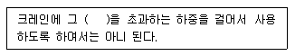
- 정격하중
- 집중하중
- 최대하중
- 적재하중
(정답률: 51%)
95. 슬레이트, 선라이트 등 강도가 약한 재료로 덮은 지붕 위에서의 작업 중 위험방지를 위하여 필요한 발판의 폭에 대한 기준은?
- 10cm 이상
- 20cm 이상
- 25cm 이상
- 30cm 이상
(정답률: 74%)
96. 거푸집동바리 등을 조립할 때의 준수 사항으로 틀린 것은?
- 동바리로 사용하는 파이프서포트의 연결은 3본까지만 허용된다.
- 동바리의 고정 등 지주의 미끄러짐을 방지하기 위한 조치를 하여야 한다.
- 동바리로 사용하는 파이프서포트에 대해서는 높이가 3.5m 초과하는 때에는 2m 이내마다 수평면결재를 2개 방향으로 설치한다.
- 깔목의 사용, 콘크리트 타설, 말뚝박기 등 동바리의 참하를 방지하기 위한 조치를 하여야 한다.
(정답률: 47%)
97. 안전대 고리 부착 설비의 높이(H)를 산정하는 공식으로 맞는 것은?
- H > 로프길이 + 로프의 신장 길이 + 1/2작업자의 키
- H > 1/2로프길이 + 로프의 신장 길이 + 작업자의 키
- H > 로프길이 + 1/2로프의 신장 길이 + 작업자의 키
- H > 로프길이 + 1/2로프의 신장 길이 + 1/2작업자의 키
(정답률: 43%)
98. 가시설물의 지지보가 그림과 같이 하중을 받고 있다. 이때 보의 단면에 발생하는 최대 휨모멘트는 얼마가 되는가?
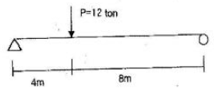
- 28 tonㆍm
- 12 tonㆍm
- 48 tonㆍm
- 32 tonㆍm
(정답률: 28%)
99. 이동식 비계를 조립하여 작업을 할 때에 준수사항과 거리가 먼 것은?
- 비계의 최상부에서 작업을 할 때에는 안전난간을 설치 할 것
- 이동식지계의 바퀴는 이동을 방지하기 위하여 고정시킨 후 비계의 일부를 견고한 시설물에 잡아매는 등의 조치를 할 것
- 승강용 사다리는 견고하게 설치할 것
- 지주부대와 수평면과의 기울기는 78도 이하로 하고 지주부재 사이를 고정시키는 보조부재를 설치할 것
(정답률: 66%)
100. 철골 작업 시 강우량에 대한 작업을 중단하는 기준은?
- 시간당 1mm 이상인 경우
- 시간당 5mm 이상인 경우
- 시간당 10mm 이상인 경우
- 시간당 15mm 이상인 경우
(정답률: 67%)
강도율 = (사망자 수 + 휴업일수) / (노동자 수 × 작업일수 × 작업시간)
여기에 주어진 값들을 대입하면,
강도율 = (1 + 60) / (2000 × 300 × 9)
강도율 = 61 / 540000
강도율 = 0.000113
하지만, 이 값을 100,000으로 곱하면 강도율을 표현하는 일반적인 단위인 100,000명당 사망자 수로 변환할 수 있다.
강도율 = 0.000113 × 100,000
강도율 = 11.3
따라서, 이 사업장의 강도율은 11.3이다. 그러나 보기에서는 강도율을 소수점 둘째자리까지 표현하도록 요구하고 있으므로, 11.3을 소수점 둘째자리까지 반올림하여 1.40이 된다.